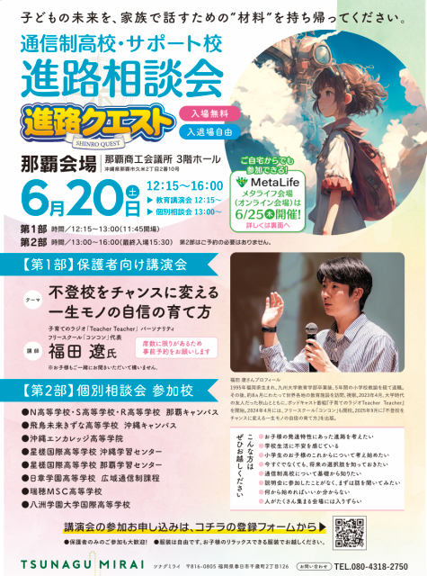
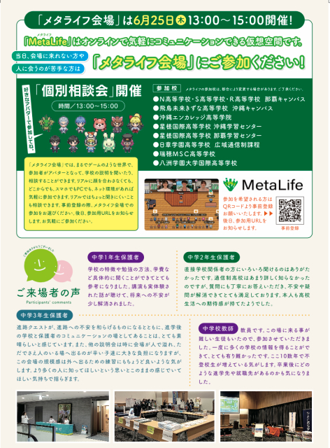

通信制高校・サポート校 進路相談会のお知らせ
進路や学校選びに不安を感じる保護者・子どもたちに向けて、通信制高校・サポート校の先生と直接話せる相談会が開催されます。詳しい内容は下記チラシをご確認ください。
チラシ


Teacher Teacher 福田遼さんの講演会も予定されています
子育て・教育をテーマに発信している「Teacher Teacher」の福田遼さんによる、保護者向け講演会が行われます。テーマは「不登校をチャンスに変える 一生モノの自信の育て方」。学校との関わり方や、子どもの自信を育てるヒントを知る機会として紹介されています。 StarCraftersでも以前、親子向けイベントで福田さんに講演をお願いしたことがあり、その時も子育てや学びについて考えるあたたかな時間になりました。 前回の関連イベントはこちら
開催概要
- 日時2026年6月20日（土）12:15〜16:00
- 会場那覇商工会議所 3階ホール
- 対象進路や学校選びについて情報を必要としている保護者・子どもたち
- 内容個別相談、Teacher Teacher 福田遼さん講演会など
- 参加方法入場無料・入退場自由。申込方法はチラシをご確認ください。
StarCraftersでは、子どもたちの学びや居場所づくりに関わる活動を行っています。今回のような“進路の選択肢に出会える場”が、必要な方に届けばと思い、ご紹介します。